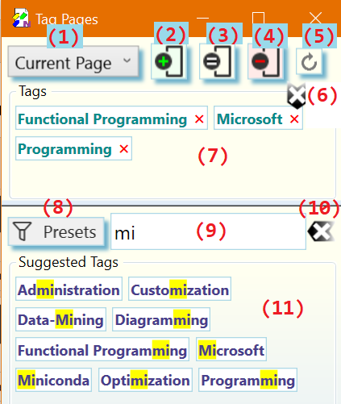

Add/Remove Tags on a _OneNote_Page
Browse to a page in _OneNote_which you want to tag
On the OneNote__Home tab click on the Tag Pages button in the Page Tags command group:

The Tag Pages dialog opens where you can select and apply tags to _OneNote_pages as described below:

Select a range of pages to apply the tags to in the scope selector (1). If you have chosen the Selected Pages option you may at this point select any number of pages in the current OneNote section. Do not close the Tag Pages dialog while selecting pages in OneNote. To select multiple pages remember to hold the CTRL key during selection.
Define the tags to apply to a one or more pages by:
typing one or more tags separated by comma ',' into the tag input box (9). The tag suggestions (11) are updated as you type to show matching tags. Press ENTER to add all tags to the Tags list as you typed them, or select the tags you want from the Suggested Tags panel (11).
To clear the tag input box (9) and start over, click on the clear input button (10) or press ESC. To clear the tag input box (9) and the Tags list (7), press SHIFT+ESC.
picking one or more tags from the list of suggested tags (9).
To remove individual tags from the Tags (7) panel click on the tag. To remove all tags at once click the Clear button (6)
selecting a preset filter (8) to generate context specific suggestions in (9) and then picking one or more tags from the (filtered) list of suggested tags (11) or pressing ENTER to chose all tags listed in (9).
Apply the tags shown in (7) to the selected range of pages by pressing one of the action buttons (2), (3), or (4). Following actions are available:
Add Tags (2): The tags in the Tags list (7) are added to page(s). Other Tags already on the selected pages are left intact.
Alternatively, if keyboard focus is still in the tag input box (9), you can press SHIFT+ENTER or CTRL-+ to add tags to the Tags (7) list and add them to the selected pages.
Set Tags (3): The tags in the Tags list (7) replace all tags in the range of selected pages.
Alternatively, if keyboard focus is still in the tag input box (9), you can press SHIFT-CTRL-ENTER to add tags to the Tags (9) and set them on the selected pages.
Remove Tags (4): The tags shown in the Tags list (7) are removed from the range of pages. Other Tags already on the range of pages which do not appear in the list are left intact.
Alternatively, if keyboard focus is still in the tag input box (9), you can press CTRL-ENTER or CTRL-- to add tags to the Tags list (7) and remove them from the selected pages.
Depending on the tag display options selected in the [[Preferences|Preferences-Tab]] dialog page tag changes should appear on the affected page like so:

or

Notes:
Tags that were not previously in the suggestion list (11), are added automatically when they are applied.
The tags displayed on the top of each tagged page are meant to be read-only. However, OneNote does not have any concept of read-only, so it is possible to manually edit the tags on the page. If manual edits happened the internal tag database of the OneNote Tagging Kit is out-of-sync with the tags displayed on the page. Press the re-sync button (5) to resynchronize the tags with the internal database.
Re-syncing is also useful to update tag display after tag related configuration changes with the [[Preferences|Preferences-Tab]] dialog.